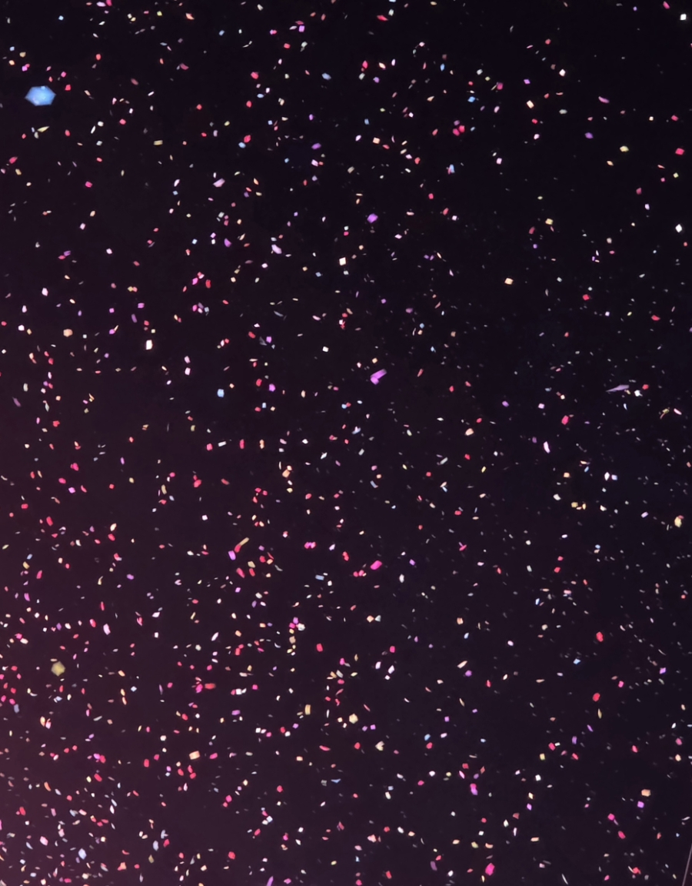
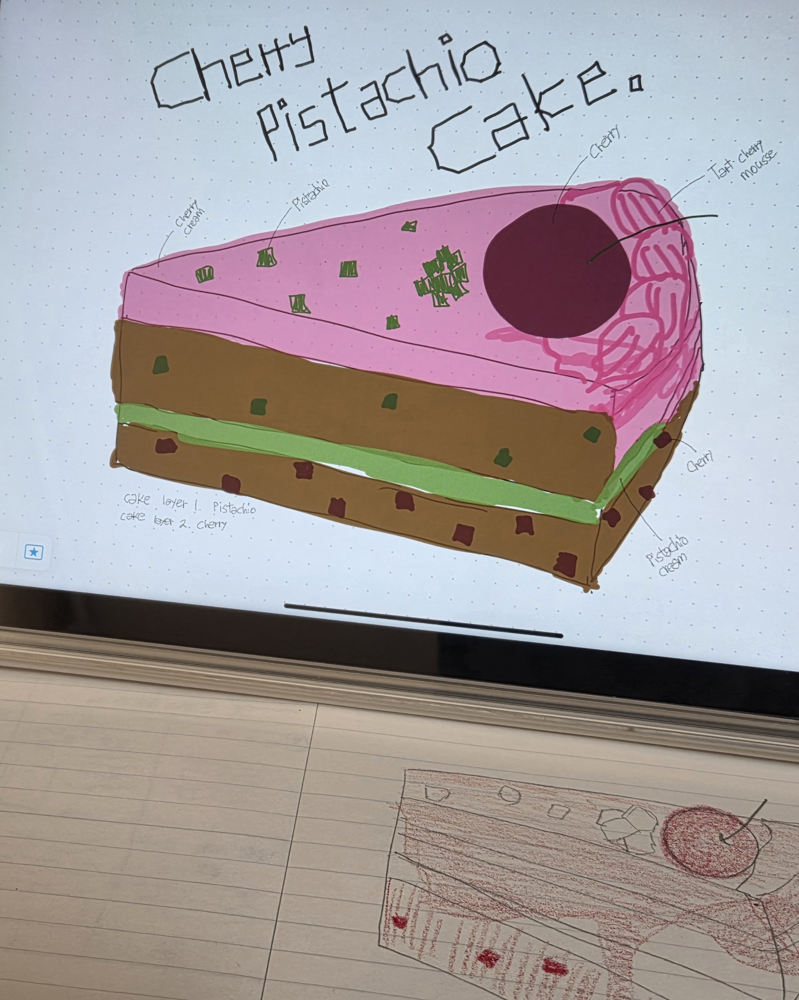
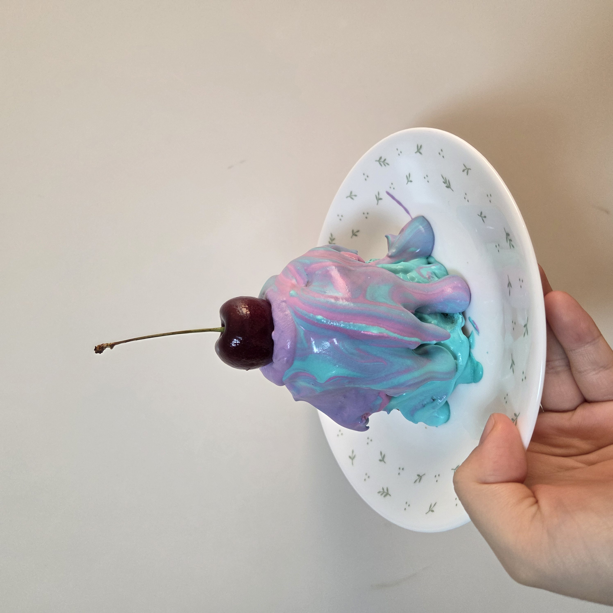
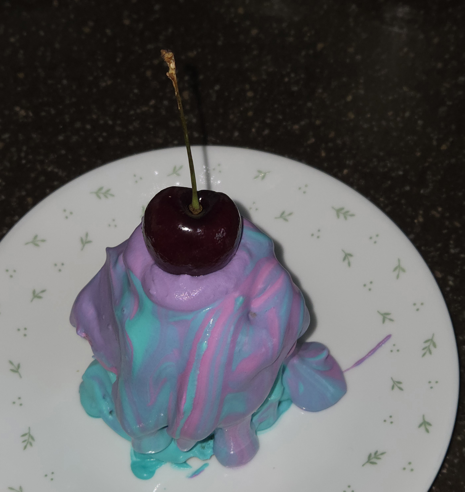
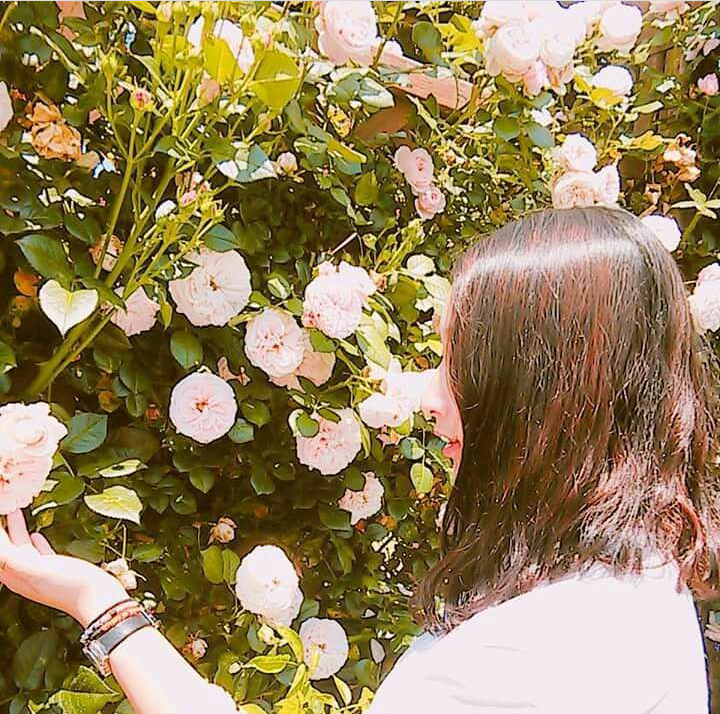

- ‘안녕히’ 살기
- 마음도 몸도 건강하기
- 시기와 질투 없이 세상 바라보기
- 열등감 트리거로 사용하기
- 끝까지 사랑하기
- 내 가치를 기준으로 판단하기
소원
목차
1. 여는 말
여러분은 ‘소원’이라는 단어를 들으면 무엇이 떠오르나요? 소원을 이루어주는 정령이 깃든 낡은 램프, 소녀시대, 일상 속 사소한 바람들. 아마 사람마다 전혀 다른 장면이 연상될 것 같아요.
저는 하늘 높게 뜬 보름달을 올려다보며 목표나 꿈이라 부를 수 있는, 못 다 이룬 바람을 빌던 제 어린 시절이 가장 먼저 생각난답니다. 여담이지만, 여전히 같은 소원을 빌고 있어요! 하하.
<초록>을 여는 첫 번째 키워드로 ‘소원’을 고른 이유는 너무 깊지도 무겁지도 않으면서 누구나 하나쯤은 가지고 있을 것 같았기 때문이에요. 소원을 주로 ‘이루고 싶은 것’이나 ‘달성해야 할 목표’로 소비하는 게 보통인 저로서는, 성과와 무관한 소망이 주된 사람은 무얼 바라는지 궁금해지더라고요.
여러분은 어떤 소원을 마음에 품고 계시나요? 그 소원은 성취나 성과에 관련된 것인가요, 증명이 필요 없는, 성과와 무관한 목표인가요?
2. 말해도 되는 소원 VS 말 못 하는 소원
3. ‘소원’이라는 단어의 온도
 개기월식을 기다리며
개기월식을 기다리며
‘소원’은 누군가에겐 뜨거울 수도, 차가울 수도, 혹은 미지근할 수도 있다. 우리는 어떤 온도의 소원을 마음에 담아두고 사는 사람인가.
온도라는 것은 불변하지 않는다. 냉기 가득한 계절에도 체온은 옮겨 붙는다.
꿈은 보통 크게 부풀려지고, 목표는 숫자와 함께 불린다. 계획은 설명을 요구받고 성과는 증명을 요한다. 소원은 그렇지 않다. 소원은 말하는 순간보다, 말하지 않은 채 남아 있을 때 더 오래 버틴다.
그래서인지 소원에는 유난히 부끄러움이 많다. 어디까지가 진심이고, 어디까지가 변명인지 스스로도 정확히 가늠하지 못한 채 품은 소원에는 나도 모를 욕망이 곳곳에 숨어있다.
소원은 이루어지기보다는, 식지 않기를 바라는 마음에 더 가까운 단어일지도 모른다.
4. 남들에게 설명할 필요 없는 소원에 대하여
5. Wish, Wish, Wish
매년 바뀌는 소원을 기억하고 계신가요? 저는 비는 대상도 없이 매년 다른 시기에, 다른 방법으로 비는 소원이 있는데요. 그중 몇 가지만 적어보려고 해요. 저는 워낙 많은 소원을 가지고 있어서, 이렇게 나눠도 괜찮은 것들이 꽤 있거든요.

흩날리는 소망들
설명이 필요 없는 소원은 이 정도입니다. 소원이라기보다는 모토에 가까워 보일지도 모르겠어요. 그래도 전 이런 것들을 달로 별로 올려 보내고는 합니다.

세상에 나올 때마다 비웃음 당하는 나의 그림.
이건 올해 이루어졌으면 하는 소소한 꿈이에요.
<체리 피스타치오 케이크> 만들기!
작년 겨울부터 일면 없는 체리 피스타치오 케이크가 먹고 싶었는데, 열심히 검색해도 파는 곳을 발견하지 못했다는 슬픈 소식. 겨우내 레시피만 적어두고 끝났답니다.
올해는 저 케이크를 제 손으로 직접 만들어 먹을 거예요.
이 글을 적은 시점은 1월 초인데요, 1월 말(29일)에 최소한의 재료로 첫 번째 시도를 했어요. 결과는 처참히 실패했고요.

조금 망한 것 같은 체리 피스타치오 케이크

조금이 아닌가...;
굳이 굳이 잘한 점을 꼽자면(재시도를 위한), 식감이 퐁신퐁신 재미있었고요, 맛도 고소하고 많이 달지 않아 부담 없었어요.
다음 시도에선, 잊지 않고 크림에 피스타치오 페이스트를 섞을 거고, 체리도 잘게 다져서 시트 사이에 체리잼을 넣을 거예요.
6. 맺는 말
중학생 때, 실로 엮어 만든 팔찌를 선물 받은 적이 있어요. 전 그 팔찌를 3년이 넘게, 하루도 빼지 않고 차고 다녔어요. 고등학생이 되어서도요. 팔찌를 준 사람이, 소원을 빈 팔찌가 스스로 풀리면 그 소원이 이루어진다고 했거든요.
전 두 개의 실팔찌를 차고 다녔는데, 가장 중요하게 생각하는 소원을 빈 팔찌가 먼저 끊어졌어요. TMI지만, 그 소원에는 이뤄질 시기를 같이 빌었기 때문에, 끊어진 순간 든 느낌은 기대나 설렘보다 걱정과 두려움에 가까웠어요. ‘왜 벌써 끊어지지? 지금은 때가 아닌데.’ 이런 생각 뿐이었답니다.

이야기 속 소원팔찌
얼마 안 돼 남은 하나도 끊어졌지만, 소원은 이루어지지 않았어요.
팔찌 두 개는 비단으로 만든 파우치 안에 잘 보관하고 있어요. 어린 날, 제가 빌었던 소원이 뭔지 정확히 기억나진 않지만 분명 지금과 별반 다르지 않을 거라고 생각해요. 그때의 간절했던 마음을 아직도 아끼고 있고요.
소원은 자신의 것이 아니면 이루어지지 않는다고 해요. 저로서는 조금 짜증 나는 이야기지만, 별수 있나요. 이루어주지 않을 거라면, 이뤄나가면 되죠!